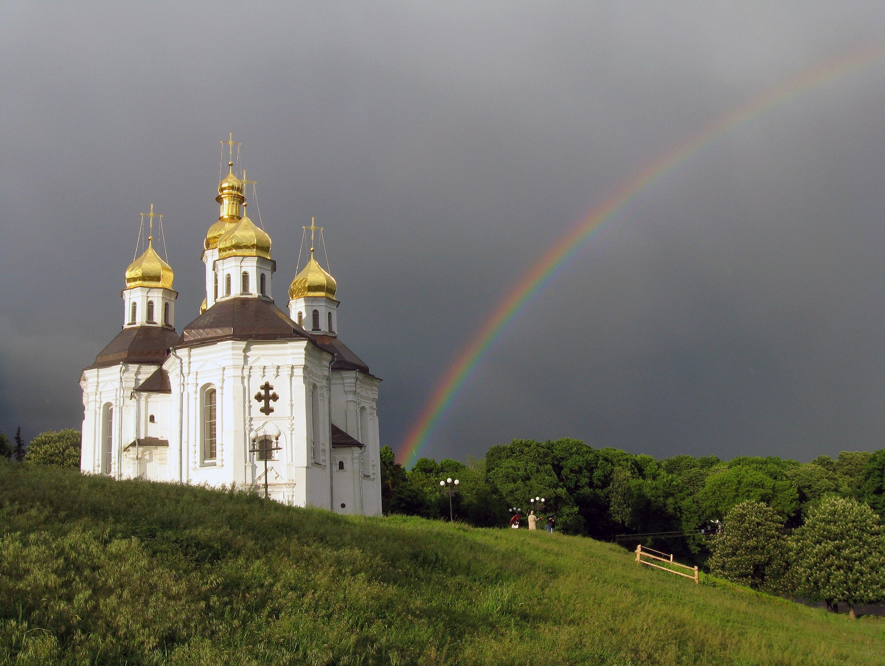
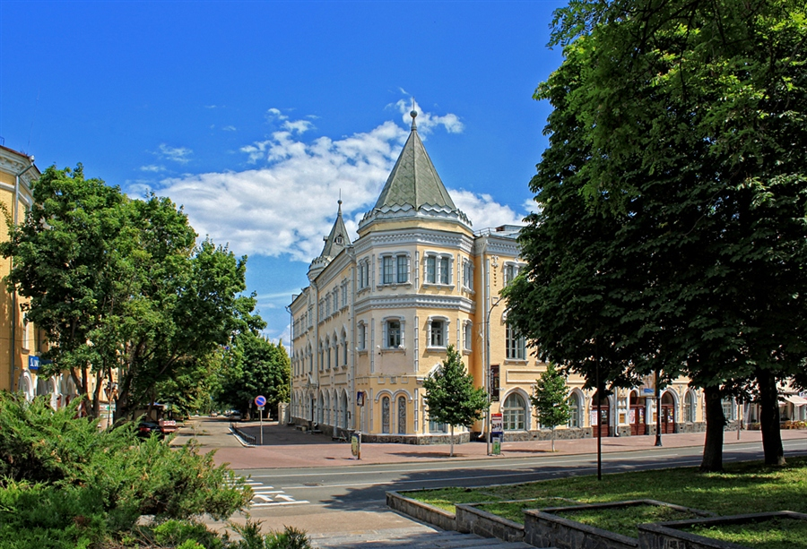
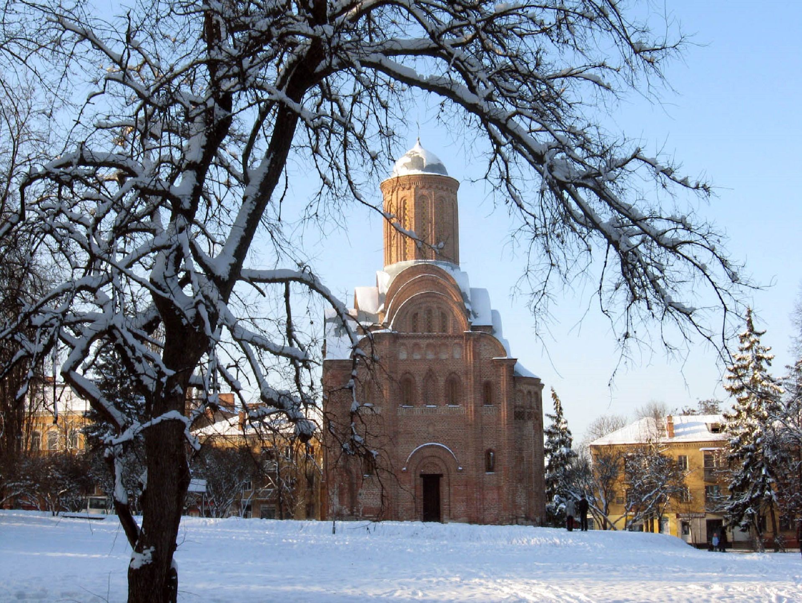
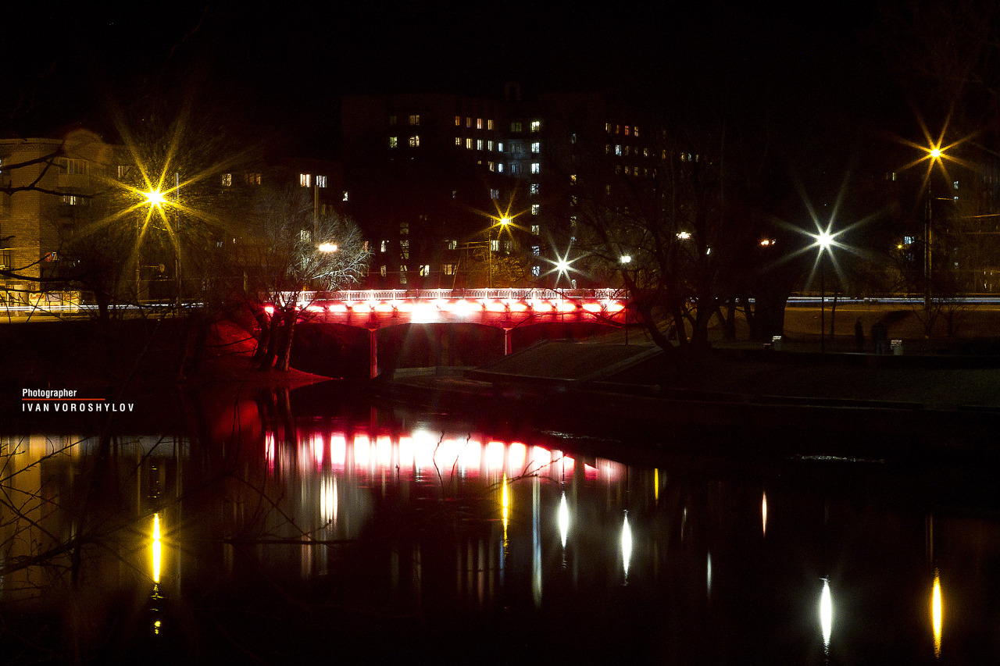

Міста, які варто відвідати
1. Катерининська церква
Символ Чернігова, який видно ще далеко до в’їзду в місто. Перша церква, що зустрічає гостей міста, які прямують з київського напрямку. Споруджена на честь героїзму казаків Чернігівського полку, проявленого під час штурму турецької фортеці Азов у 1696 році під командуванням чернігівського полковника, наказного гетьмана Якова Лизогуба. Освячена в 1715 році.
2. Обласна філармонія або Єпархіальне братство
Будівля є пам’яткою архітектури. Вона досить не характерно для слов’янського стилю ХІХ століття, але дуже оригінальна і досить цікава. Чернігівська обласна філармонія знаходиться в колишній будівлі Миколаївського Єпархіального братства. Будинок побудований в 1911–1912 роках. В ансамбль ввійшла зведена в 1870 році каплиця в честь Олександра Невського.
3. Церква Параскеви-П’ятниці
Понад сім століть прикрашає центральну частину давнього Чернігова ця кам’яна квітка – маленька церковця на честь Параскеви-П’ятниці. Яких тільки історичних перипетій не бачили ці могутні стіни архітектурної пам’ятки домонгольської доби? До речі, в Чернігові таких пам’яток більше, ніж у будь-якому іншому місті України і Європи.
4. Красний міст
У Чернігові одне з чудових історичних місць, що пов’язує події з минулим міста, є «Красний міст». Перші відомості про дерев’яний міст через річку Стрижень відносяться до 1783 року, відомо що міст знаходився на древньому шляху, що поєднував Чернігів з містами Київської Русі. Цікаво, що міст був єдиним в місті через річку Стрижень. Ім’я «Красний» міст отримав за свою красу.
5. Борисоглібський собор
Свідок князівськой доби є усипальницею князів роду Давидовичів, а пізніше головний храм кафедрального монастиря. Відома пам’ятка архітектури міста Чернігова домонгольської доби названа на честь Св. страстотерпців князів Бориса й Гліба. Окрасою експозиції собору є срібні з позолотою царські врата, масою близько 56кг. Вони були виготовлені на початку ХVІІІ ст. за наказом гетьмана І.С.Мазепи, в майстерні Пилипа Якоба Дрентветта з міста Аусбурга.